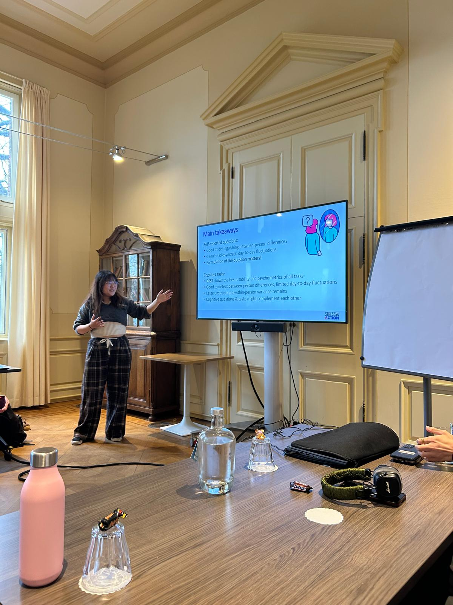
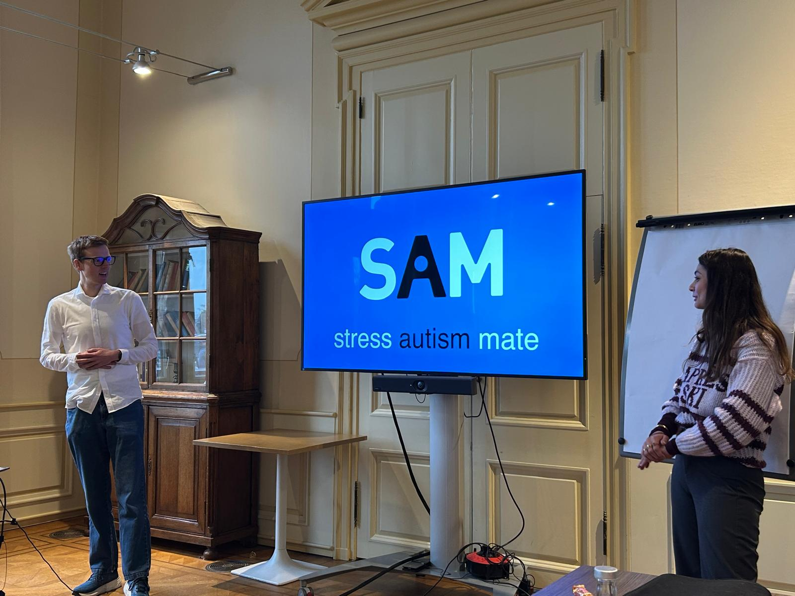
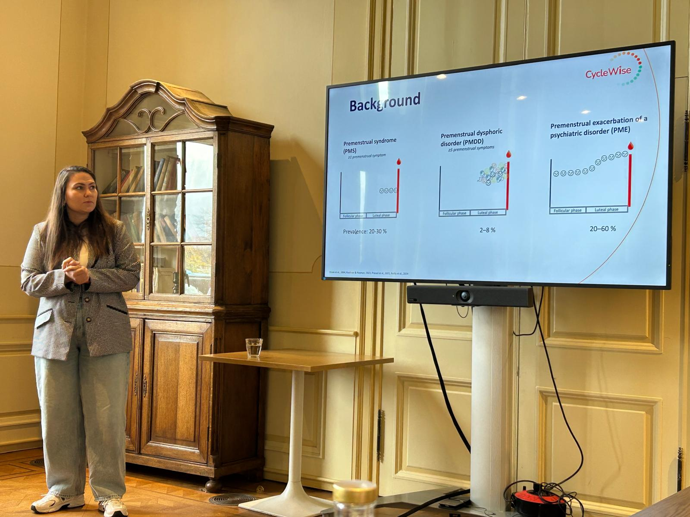
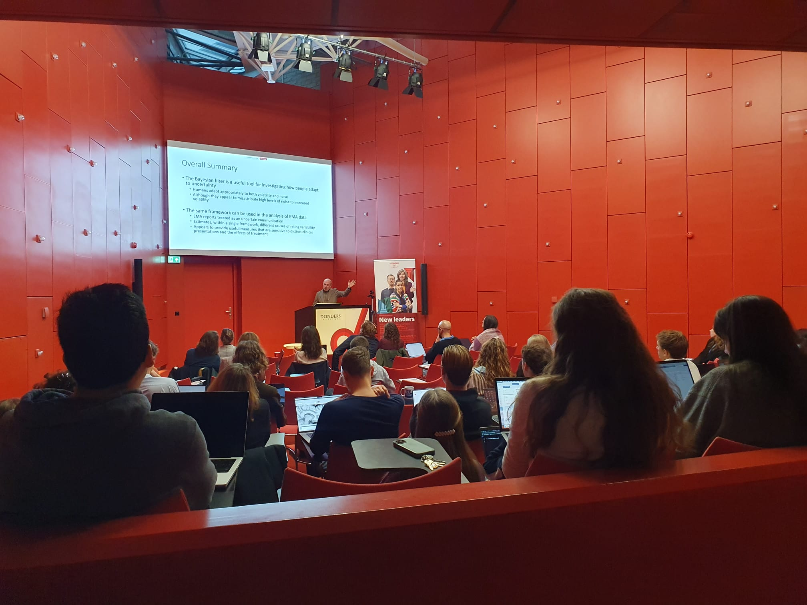
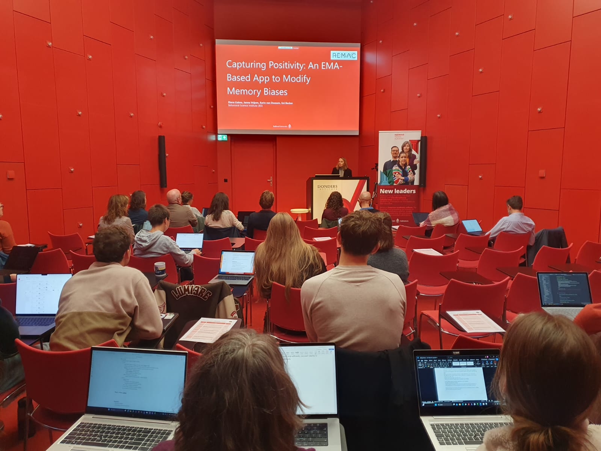
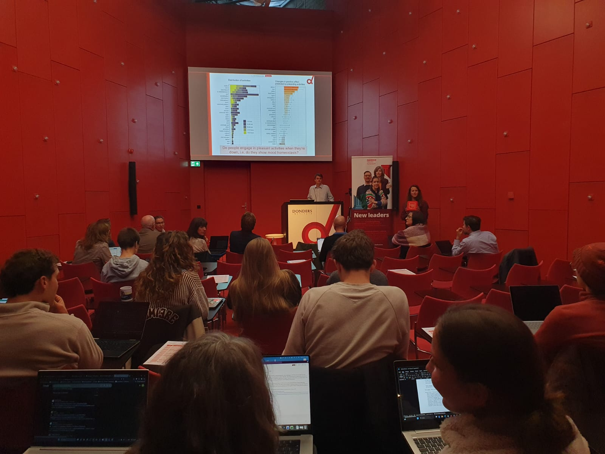

Keep up to date and come join us at termly meetings about ongoing EMA-related projects!
Do you want to present your work at one of our meetings? Email us at remac.a.psy@radboudumc.nl.
Upcoming Meetings (2027)
- Monday January, 25th 10:00-12:30u
- Monday April, 5th 10:00-12:30u
- Monday June, 14th 10:00-12:30u
- Monday November, 15th 10:00-12:30u
Past Meetings
16 November 2026



with pitches by
Xiaochang Zhao (University of Twente; Capturing cognition in daily life: Active and passive smartphone-based assessments in the context of stress management), Alvin van Asselt & Sevda Demirel (GGz Centraal; Using the Stress Autism Mate app for EMA in autistic and non-autistic adults), and Michele Schmitter (Development of a digital menstrual cycle diary for routine mental health and gyneacological care: A human-centered design approach)
14 September 2026
with pitches by
Zeynep Koyuncu (Capturing fatigue in daily life: Preliminary findings from the Healthy Brain Study), Jade Kraan (Catching agency as it happens. An ecological momentary assessment of student agency and agentic engagement in medical workplace learning), and Loes Pouwels (Displacement and compensation: How online and in-person interactions relate to adolescents' social and emotional connectedness)
11 May 2026
with pitches by
René Melis (Validation of handgrip work test time series: how do time series features depend on the presence of a dominant stimulus?), Anika Poppe (SelfBoost: Targeting self-efficacy and neuroplasticity in a mechanism-based mental eHealth intervention), and Aline Korver (Characterizing Trial-to-Trial Dynamics in Binary Accuracy Data)
9 March 2026
with pitches by
Daan Hulsmans (Understanding the individual in clinical practice with EMA), Loran Knol (Digital phenotyping across the menstrual cycle), and Renee Roosen (Well-being and self-determination in mental health care patients during a professional dance program)
19 January 2026
with pitches by
Nina van den Broek (Nice to meat you: Design of a mixed-method study to unravel how personal social relationships affect young adults’ food intake), Anouk Vroegindeweij (The 'Booster' method: Personalized interventions to reduce fatigue in adolescents), and Suhaavi Kochhar (Exploring trajectories of craving and affect around quit date in cigarette-smoking youth)
19 November 2025
REMAC x CNP Symposium - Moments, Models and Mental Health



with keynotes by
Prof. Michael Browning (EMA as uncertain communication) and Dr. Olivia Kirtley (Risk, reactivity, and responsibility in ESM research on suicidal thoughts and behaviours)
and local pitches by
Iliana Liakea (Capturing positivity: An EMA-based app to modify memory biases), Dr. Bertalan Polner (Pavlovian biases predict daily life coupling of subjective valuation with action and thought), Rares Radulescu (Computational phenotyping of motivation: From foraging behaviour to real-life affect), and Dr. Jessica Schaaf (The signal in the noise: Ambulatory assessment of classroom noise and cognitive performance)
15 September 2025
with pitches by
Suhaavi Kochhar (Designing and testing the EMA component of Detour, a mobile intervention for youth smoking cessation), Edmund Lo (Detecting switching in multivariate intensive longitudinal data: Applying the Bray-Curtis dissimilarity to negative emotions and their regulation strategies), and Bertalan Polner (Real-world dynamics of activities and mood at various timescales and their modulation by Pavlovian biases)
12 May 2025
with pitches by
Sophie Bogemann & Erno Hermans (Stress monitoring with EMA and wearables: DynaMORE and DESTRESS studies) and Merlijn Olthof (The best of both worlds? General principles in personalized assessment)
17 March 2025
with pitches by
Erik Bijleveld (The ebb and flow of cognitive fatigue), Jessica Schaaf (Uncovering asymmetric dynamics in your time series data), and Jordy van Langen (Quality check and pre-processing of ecological cognitive performance data in the classroom: The CODEC study)
16 December 2025
with pitches by
Fred Hasselman (Improving intensive longitudinal data), Martijn de Groot (One button tracker: A simple and low-effort instrument for in-the-moment self-tracking), and Alessio Proposito (Road to the resilient brain study: How to measure environmental controllability in real life)
30 September 2024
Kick-off meeting
with pitches by
Bertalan Polner (Complementing EMA/ESM by cognitive variability and the impact of the broader socio-economic context), Imogen Leaning (Modelling behavioural states using passive digital phenotyping data: Can we fill the validation gap with EMA?), and Anika Poppe (When moving makes you happier: The dynamics and predictive pathways between physical activity and mood)